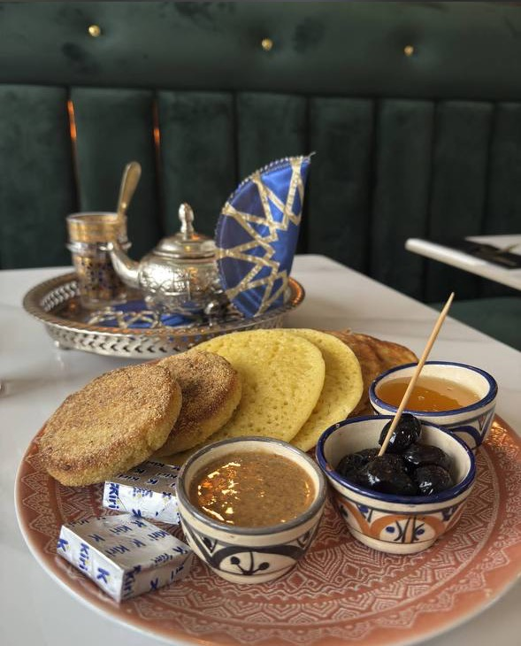
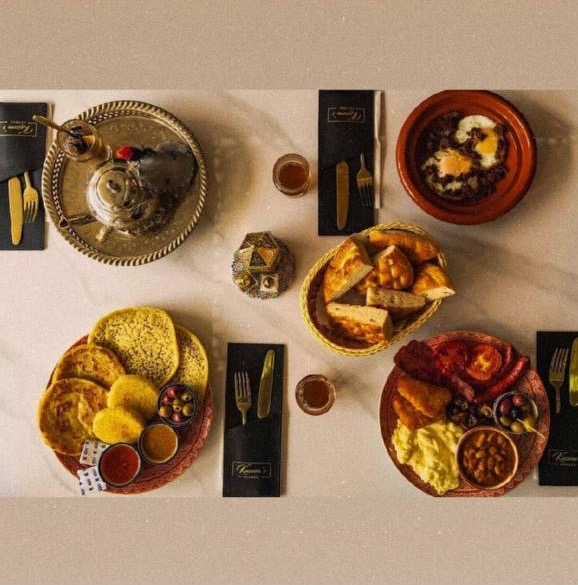
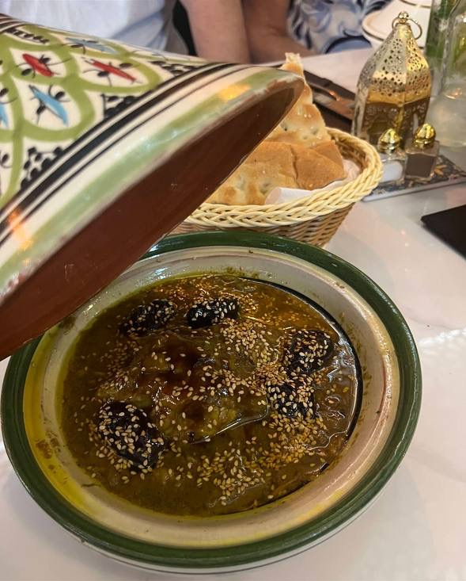
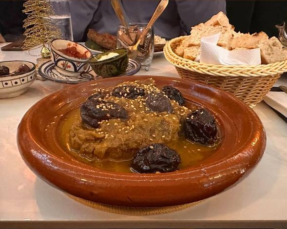
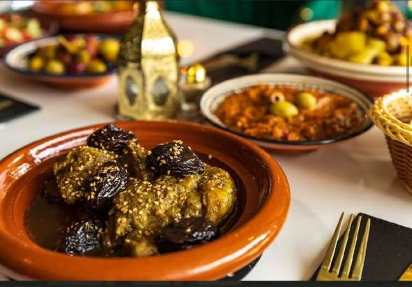
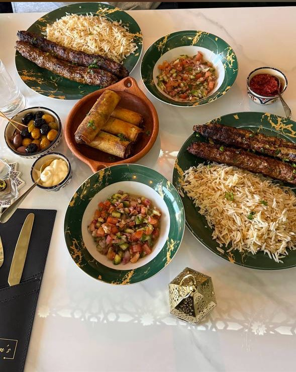
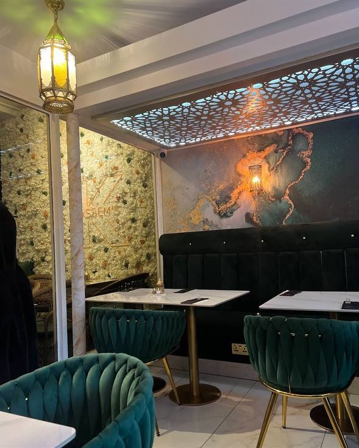

Lamb Tagine
Slow-cooked, rich, fragrant and made for sharing with warm bread.

Our Food
Kassem's Lounge serves Moroccan and Mediterranean dishes in a small, welcoming spot on Waterhouse Street. The food is built around slow cooking, warm spices, fresh bread and generous hospitality.
See the latest dishes



Slow-cooked, rich, fragrant and made for sharing with warm bread.
Vegetables, spice, broth and fluffy couscous served in a generous bowl.
Fresh, simple and essential beside tagines, mezze and dips.
A calm finish to the meal, poured hot and shared at the table.
Private Catering
Birthdays, family celebrations and private parties — tagines, mezze, fresh bread and Moroccan sweets, prepared to order by the family who cook here every day.
Tell us the date, how many people you are feeding and what you would like on the table, and we will put it together with you. Catering is arranged over the phone.
Call 01442 954333

Family Tradition
The Google reviews tell a clear story: mum cooks from the kitchen, the family welcomes people in front of house, and the room feels personal from the moment you arrive.
This website keeps that feeling front and centre: simple, warm, useful, and focused on getting people through the door.
Loved Locally
Guests praise the Moroccan cooking and generous portions.
Google review theme
Warm hospitality comes up again and again.
Google review theme
Many visitors describe it as a hidden local gem.
Google review theme
Book a Table